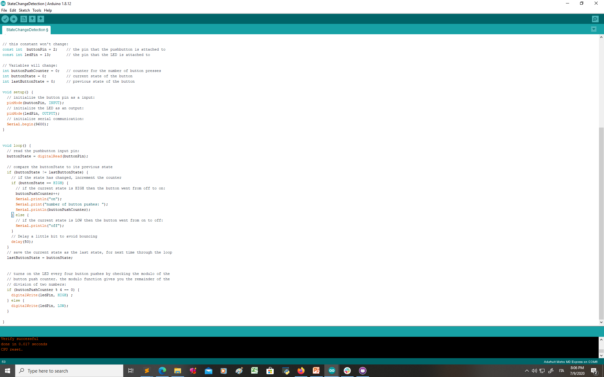

In this lecture we have learnt to use conditionals and loops. I have first crated a program with conditional statements. To write this program I followed the "StateChangeDetection" example and changed the code to make two led light instead of one so that when the button had been pressed an even number of times one led turns on and the other turns on when the button has been pressed an odd number of times.
This is the example program I have used:
This is the progam I have written:

This is my circuit:
Here is a video of the circuit running the program:
than i added nested conditional statement to make the LED turn on only when the button was pressed: